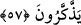
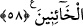

57. Savaşta onları yakalarsan, darmadağın et ki arkalarındakiler de ibret alsınlar.
Onların durumu bu olunca “savaşta” savaşın çeşitli merhalelerinde “onları
yakalarsan,” onlara rastgelir, onları yakalar ve kendilerine karşı zafer elde edersen
“darmadağın et!”
Kâşifî’nin söylediğine göre onları korkut/ürküt ve dağıt “ki arkalarındakiler” onların
gerisindeki düşmanın olan kâfirler “de” onların öldürülmesinden “ibret alsınlar.”
münafıkların başına gelenleri gören kötü niyetliler de bu sayede ibret alsınlar ve
ahidlerini bozmaktan ya da inkardan vazgeçsinler.
“
”, kovmak ve topluluğu dağıtmak demektir. Buna göre: Bu ahdini bozanlarla
savaşta karşılaşırsan onlara öyle bir ceza ver ki düzenleri bozulsun ve onlar gibi
olanlar senden korksun. Sana düşmanlık etmek ve seninle savaşmakla ilgili
hatırlarından geçirdikleri tamamen gitsin.
Bir kuş yeme doğru gitmez
Bir başka kuşu yakalanmış görünce
Başkalarının düştüğü musibetlerden öğüt al
Başkaları senin durumundan öğüt almadan önce
58. Bir topluluğun anlaşmaya hıyânet etmesinden korkarsan, sen de onlara karşı
anlaşmayı bozarak aynı şekilde davran. Çünkü Allah hâinleri sevmez.
Anlaşma yaptığınız “bir topluluğun anlaşmaya hıyânet etmesinden” yani anlaşma
yaptığın bir kavmin verdiği sözden döneceğini hisseder, çeşitli emârelerden kesin
olarak onların böyle bir hıyanette bulunacağından “korkarsan,” yani bilirsen “sen de
onlara karşı” seninle yaptıkları “anlaşmayı bozarak aynı şekilde davran.” yani
aranızdaki anlaşmanın son bulduğunu açık bir şekilde onlara ilan etmek sûretiyle
düşmanlıkta eşit yolu izleyerek ahidlerini kendilerine at, bildir. Böylelikle onlara karşı
açtığınız harpte hiyanet şaibesi sizin tarafınızdan olmuş olmasın. Onlar anlaşma devam
ediyor zannında iken harp açmanız uygun olmaz.
“Çünkü Allah hâinleri sevmez.” Bu ifade, anlaşmayı bozma emrinin illetini
bildirmektedir. Sanki: “Neden bunu bize emrettin ve ahdi bozmadan muharebe yapmayı
yasakladın?” diye sorulmuş ve yukarıdaki cümle ile buna cevap verilmiştir.
Bu cümlenin Rasûl (a.s.) ile anlaşma yapıp da sonra da ahidlerini bozan hainlere bir